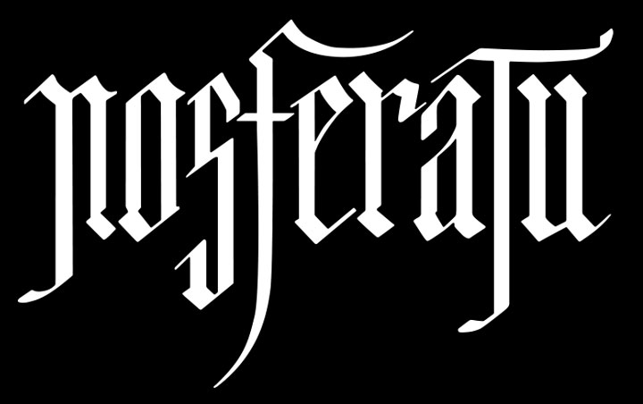

We went to see Robert Eggers's Nosferatu at my wife's suggestion together with a good friend after having lately seen the original on the big screen at the same venue. Neither of us had seen an Eggers movie before. Wife wished to be scared at the movies. Wasn't; I think she was hoping for more jump scares. I was impressed by the inky blackness of the gothic nature of it all, in the aesthetic, color grading, and themes of it all. I was reminded of Guillermo del Toro's Crimson Peak (2015), which I was also able catch in theater (by myself, late at night, with a half mile walk after...) I think she would have been more satisfied with the scares that one delivered. If she ever again expresses the desire to be scared by a film, I'll suggest Crimson Peak. Until then, I probably won't watch it either, despite how beautifully done it is.
[ Note: I had written brief notes for this post back in December but am only finishing this in June 2025. I know. Procrastination is my middle name. This is also why my thoughts may be a little thin. But I'm not the most critical of movie critics at the best of times. ]
The general critical response to the film was surprisingly divisive (even so, as of June 2025 Rotten Tomatoes is 84% Tomatometer & 73% Popcornmeter, for what that's worth, and a 7.2 on IMDB). There are those who proclaim it a masterpiece, those people greatly disappointed or, worse yet, indifferent, and then those thrown off entirely by the presence of Orlok's facial hair. Get over yourselves: it was clear Eggers did his research, and a character of Orlok's background would have had that facial hair. It is entirely appropriate.
One old friend's bewilderingly negative review on Letterboxd said it lacked narrative points from the original... that the original never actually had: perhaps they were thinking of the Herzog film from the 1970s? I haven't seen that one. Also my workplace friend who is a huge fan of Eggers (The Lighthouse is his comfort watch) was left disappointed by the film. I think he even gave it that most damning of reviews: meh
, while at least acknowledging the quality of the cinematography. Some people just can't be satisfied.
Our titular bloodsucker and bringer of plague is hidden in shadows for quite a while before appearing in his full gory gloriousness. I did kind of hope he would be left mostly in shadow for the entire film. I could snottily say I didn't ask to see him full frontal (who would), but if you're going to show him in all his glory, go for broke! Nekkid Nosferatu!
Take a gander at the typography for the title. I love it so much:
Nosferatu is worth watching, even if for nothing else the masterful cinematography of it all, the atmosphere, the use of shadow, the call backs to the original film. I was very satisfied with it, and grateful that we had seen the original in theater so recently to boot.